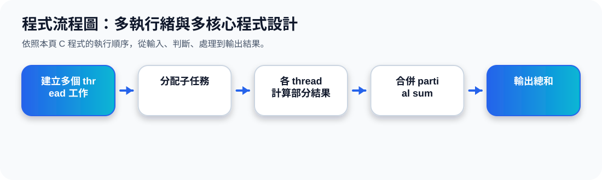

二、為什麼需要 Multithreaded Programming？
核心觀念 Thread 是 process 內部較輕量的執行單位。當一個應用程式需要同時處理顯示更新、資料讀取、拼字檢查、網路回應等任務時，多執行緒可以讓程式更有回應性。
Thread 觀念動畫
Update Display
畫面更新可以獨立處理，避免介面卡住。
Fetch Data
資料讀取可在背景進行，不阻塞主畫面。
Network Request
等待網路回應時，其他 thread 仍可繼續工作。
三、Single-threaded 與 Multithreaded Process
多個 thread 可以共享同一個 process 的 code、data、files，但每個 thread 仍會有自己的 registers 與 stack，因此可以獨立執行不同工作。
四、多執行緒的四個優點
Responsiveness
部分工作阻塞時，程式仍可回應使用者。
Resource Sharing
同一 process 內的 threads 可共享資源。
Economy
建立與切換 thread 通常比 process 便宜。
Scalability
可利用多核心或多處理器架構提升效能。
五、多核心程式設計：Data Parallelism 與 Task Parallelism
多核心系統讓程式可以把工作分散到不同核心，但也帶來資料切分、工作平衡、資料相依、測試與除錯等挑戰。
Data Parallelism
把同一份資料切成多份，不同核心做相同操作。
Task Parallelism
把不同任務分到不同核心，每個 thread 做不同操作。
六、Parallelism vs. Concurrency
Concurrency 並行
多個工作都有進展，但不一定真的同時執行。單核心也可以透過快速切換讓多個工作輪流前進。
Parallelism 平行
多個工作真的同時執行，通常需要多核心或多處理器支援。
Concurrency / Parallelism 動畫
程式流程圖與流程講解
程式流程圖：多執行緒與多核心程式設計

流程講解
可編輯 C 程式範例與線上編輯器
可編輯 C 程式：多執行緒與多核心程式設計
這段程式依照上方流程圖設計，包含中文註解，適合貼到線上編輯器直接執行與修改。
程式題目完整教學內容
程式題目完整教學：多執行緒與多核心程式設計
一、程式題目講解
用分段加總模擬多執行緒把工作切開，再把結果合併。
重點是工作分割與結果合併：Thread 1 負責前半段資料，Thread 2 負責後半段資料，最後相加。
二、完整程式碼
以下程式碼可直接複製到 C 語言線上編譯器執行。程式中已加入中文註解，說明主要變數、判斷流程與輸出目的。
#include <stdio.h>
/*
主題 12：多執行緒概念
功能：用分段加總模擬多執行緒的工作分割與合併。
*/
int main(void) {
int data[] = {1,2,3,4,5,6,7,8};
int sum1 = 0, sum2 = 0;
int i;
for (i = 0; i < 4; i++) sum1 += data[i]; // Thread 1 的工作
for (i = 4; i < 8; i++) sum2 += data[i]; // Thread 2 的工作
printf("Thread 1 partial sum = %d\n", sum1);
printf("Thread 2 partial sum = %d\n", sum2);
printf("Total sum = %d\n", sum1 + sum2);
return 0;
}三、程式執行結果
Thread 1 partial sum = 10
Thread 2 partial sum = 26
Total sum = 36結果說明：重點是工作分割與結果合併：Thread 1 負責前半段資料，Thread 2 負責後半段資料，最後相加。 程式依照設定的資料與控制流程逐步輸出，因此可以從結果看到每個步驟的執行順序與狀態變化。
四、程式流程圖與流程圖說明
本頁上方已提供對應的程式流程圖，圖中以「開始、資料設定、條件判斷、重複處理、輸出結果、結束」呈現程式執行順序。
程式先建立 data 陣列，再用兩個 for 迴圈分別計算 sum1 與 sum2，最後輸出總和。
五、重要函數與語法說明
陣列 data[] 儲存資料；for 迴圈分段處理資料；sum1 + sum2 模擬多執行緒結果合併。
六、整體說明
本題的學習重點是把作業系統概念轉成可觀察的 C 程式流程。學生應先理解題目概念，再對照程式碼、流程圖與執行結果，掌握變數設定、條件判斷、迴圈處理與輸出結果之間的關係。